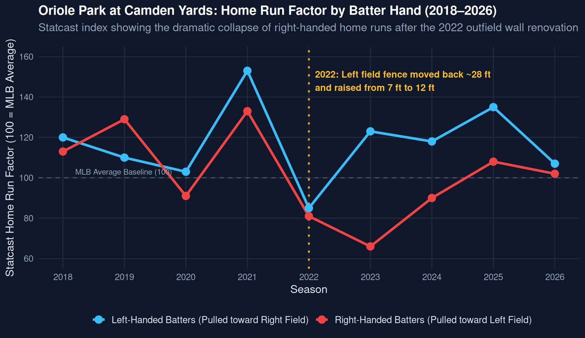

🧱 The Great Wall of Baltimore
How Camden Yards’ 2022 Left-Field Wall Alteration Halved Right-Handed Home Runs
2021 RHB HR Index
133 (Highest in AL)
Extreme hitter's paradise
2023 RHB HR Index
66 (Toughest in MLB)
Over 50% home run reduction
Fence Distance Added
+27.6 ft
Left-center pushed from 370.7 to 398.3 ft
Wall Height Increase
7 ft → 12 ft
Near doubling of barrier height
The Natural Experiment: Statcast Home Run Factor (2018–2026)
A Tale of Two Outfields: The Story Behind the Numbers
The Launching Pad Era (2018–2021)
When Oriole Park at Camden Yards debuted in 1992, it redefined sports architecture as baseball’s archetypal “retro-classic” ballpark. However, as modern hitters adopted optimized launch angles and chased exit velocities in the Statcast era, Camden Yards evolved into an extreme bandbox. With a modest 370.7-foot left-center power alley and a low 7-foot outfield wall, fly balls that were routine outs in other stadiums sailed comfortably into the left-field seats. In 2021, Camden Yards posted an eye-popping 133 Home Run Factor for right-handed batters, ranking as the single most hitter-friendly venue in the American League. Orioles pitchers surrendered an MLB-record 258 home runs in 2019 and matched it with another 258 home runs in 2021, convincing the front office that sustainable pitching development was impossible without structural intervention.
The 2022 Architectural Shock
Prior to opening day in 2022, the Orioles took an unprecedented step: rather than retooling the roster alone, they physically altered the ballpark itself. The left-field fence was pushed back 27.6 feet (expanding the left-center power alley to 398.3 feet), and the wall height was nearly doubled from 7 feet to 12 feet. Soon dubbed “The Great Wall of Baltimore” or “Lord Baltimore” by players and analysts, this architectural renovation formed one of the cleanest natural experiments in baseball analytics. Because the right-field dimensions remained entirely untouched at an asymmetrical 318 feet, researchers enjoyed an ideal internal control group: left-handed hitters pulling fly balls to right field versus right-handed hitters driving balls into the newly expanded cavern in left.
The Empirical Verdict in the Data
The empirical impact captured in the Statcast data was instantaneous and unprecedented. As the chart above demonstrates, Camden Yards’ right-handed home run factor collapsed immediately from 133 in 2021 to 81 in 2022, before bottoming out at an astonishing 66 in 2023—a greater than 50% plunge in home run production for identical contact quality. Batted balls struck at 102 mph with a 28-degree launch angle that had routinely cleared the old fence were suddenly bouncing off the 12-foot padding for long doubles or dropping safely into outfield gloves. Meanwhile, left-handed hitters pulling toward the short porch in right field maintained high home run production (peaking at 123 in 2023), confirming that the suppression was strictly localized to the modified left field.
Strategic Consequences & Future Adjustments
The wall’s outsized influence reshaped team strategy, free agency, and player evaluation. Baltimore’s young pitching rotation flourished, enjoying an immediate drop in earned run averages and greater confidence attacking right-handed hitters inside the strike zone. Conversely, elite opposing right-handed sluggers like Aaron Judge voiced frustration as legitimate 400-foot drives repeatedly fell short of the boundary. The intervention was so effective that following the 2024 season, the Orioles announced plans to modestly bring the wall in by roughly 9 to 11 feet and lower its height to 8 feet for 2025—seeking an equilibrium between protecting their rotation and giving right-handed hitters a fighting chance. The Camden Yards experiment demonstrates that in baseball, stadium geometry is not passive scenery; it is an active twelfth defender on the field.